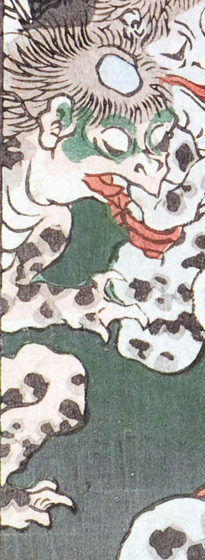

河童。頭頂が禿げて、皿のようになっている。目の周りは緑色で、口は嘴のように尖っている。全身は薄茶色く、黒い斑が入っている。手足の指は3本で爪が鋭い。座って、前方を見ている。
著作者：一魁齋芳年（月岡芳年）／出典：親書誌：U426_nichibunken_0136：白藤源太；シラフジゲンタ／日付：2009／資源識別子：U426_nichibunken_0136_0001_0003
Copyright (c)2010- International Research Center for Japanese Studies, Kyoto, Japan. All rights reserved.